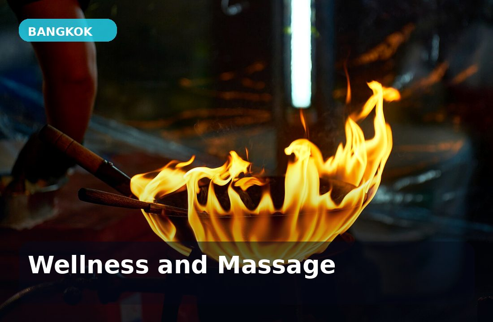

Klassiker
Thai massasje
Thai massasje er mer aktiv enn mange forventer. Terapeuten bruker trykk, tøying og rytmiske bevegelser for å løsne stive muskler. Det kan være intenst, men er ofte akkurat det kroppen trenger etter flyreise, shopping og lange dager i Bangkok.
Tips: si fra om du ønsker soft, medium eller strong pressure.